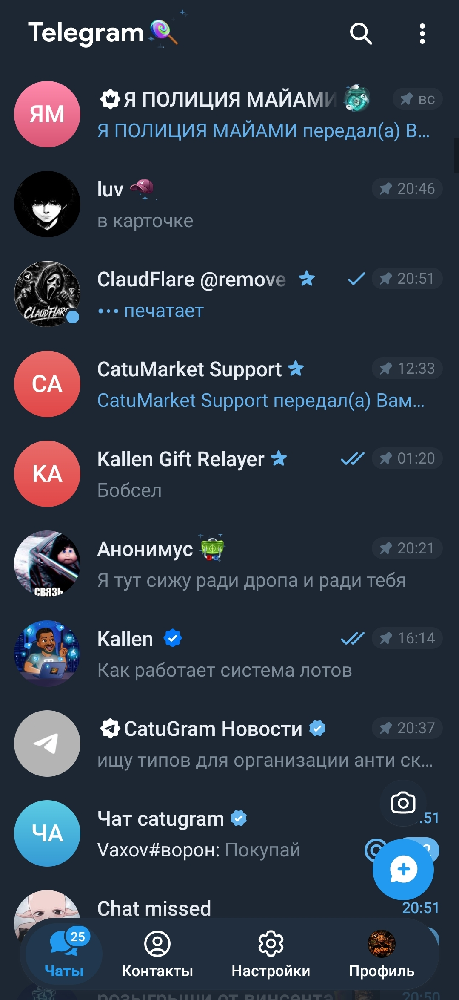

Последние новости
Важно
Все скамеры массово получают бан. Если хотябы ваш 1 аккаунт забанен, то ваши твинки будут забанены по цепочке!
Сегодня
Сайт Catugram вышел из бета-теста!
Скоро
Крутые NFT подарки, галочки верификации, будущие друзья ждут вас в Catugram
Особенности сервера
Бесплатный Catugram Premium
Никаких дорогих покупок за звезды, Premium выдается сразу при регистрации аккаунта!
Чистый код
Сайт написан вручную, без искусственного интеллекта. Только оптимизированный и чистый код.
Анонимность
Ваши данные - User_name, номер телефона защищены полностью, мошенники не выйдут на вас в Telegram
Drop NFT
Почти каждый день @Annie дропает NFT подарки!
